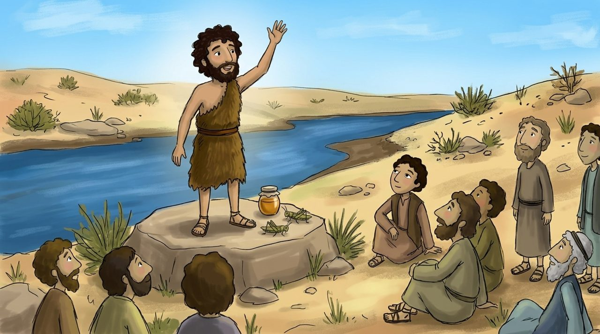

1 · Matthew 3:1–6
A Voice in the Wilderness
wore clothes made of camel's hair and had a leather belt around his waist. This was the appearance of the prophet Elijah in the Old Testament 2 Kings 1:8. After four hundred years without a prophet, a prophet appeared again in Israel.
He was the "voice of one crying in the wilderness" spoken of by Isa. 40:3. His message was short: ", for has come near."
Looking Deeper · Why the wilderness?
The wilderness is the place where Israel stayed for 40 years after leaving Egypt and came to know God. John called the people back to the wilderness so they could make a fresh start as they crossed the Jordan River. God started His new work not in a magnificent temple, but in the empty desert.